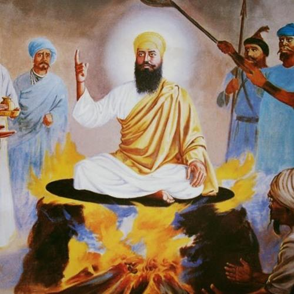

Guru Arjan Dev Ji

Guru Arjan Dev Ji, the fifth Sikh Guru, endured five days of torture without shedding a
drop of blood. Born on April 14, 1563, in Goindwal, he was the son of Guru Ram Das Ji
and Bibi Bhani Ji. Recognized for his spiritual qualities early on, Guru Arjan Dev Ji was
chosen as the Guru after demonstrating a balance of Naam, Seva, and community engagement.
His marriage to Mata Ganga Ji resulted in the birth of Guru Hargobind Sahib Ji. Guru
Arjan Dev Ji played a key role in completing the construction of the Amritsar Sarovar
and expanded the city of Amritsar. He chose a Muslim, Hazrat Mian Mir, to lay the
foundation stone of Harmandir Sahib, emphasizing religious tolerance. To combat the
distortion of Sikh teachings by Prithi Chand, Guru Arjan Dev Ji compiled the Adi Granth,
organizing it by Raag. The Adi Granth was later developed into Guru Granth Sahib, with
nearly half of its shabads written by Guru Arjan Dev Ji. In 1605, Jahangir's ascent to
the throne marked a turning point. False accusations led to Guru Arjan Dev Ji's arrest
and subsequent torture. Despite enduring immense suffering, Guru Ji remained calm,
reciting Naam and Shabads. On May 25, 1606, Guru Arjan Dev Ji became the first Guru to
become shaheed, setting a powerful precedent for Sikhi. He also gave a bachan(command)
to his son Guru Hargobind sahib that the Sikhs will have to take up arms to defend
themselves and the defenseless.